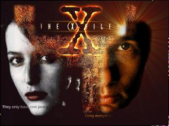
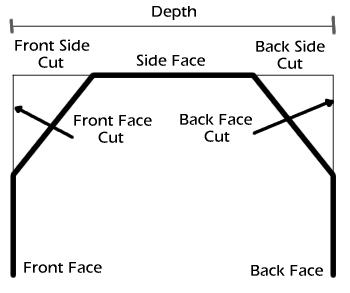

|
|
 |
muse:
|
 |
Play Video CDs with MpegTV PlayerMpegTV is happy to announce that is it now possible to play Video-CD's (VCD's) on Linux-x86 systems with MpegTV Player 1.0 and xreadvcd.MpegTV Player 1.0 is shareware (US$ 10) for personnal and non profit use only. Commercial licenses are required for commercial or governmental use. xreadvcd is a free utility developped by Ales Makarov (source code available). For information and to download MpegTV Player and xreadvcd:
To receive announcement of new MpegTV product releases you can subscribe
to our mailing list:
Contact information: mailto:info@mpegtv.com
|
Xi Graphics announes Virge GX/2 supportXi Graphics, Inc. announces support for the Virge GX/2 in their Accelerated-X Display Server v4.1 for Linux, FreeBSD, BSD/OS, Sun Solaris/86, Interactive, Unixware, and SCO OpenServer V. XiG has full 2D acceleration in all color depths and resolutions. XiG also supports hardware gamma correction.For current users of Accelerated-X Display Server v4.1 there is now an update_4100.016 on their FTP site which contains new support for the Virge GX/2 (AGP & PCI) video cards, this update includes specific support for the Number9 Reality 334 video card. The update also contains enhanced support for the previous Virge GX and DX video cards. For a demo of the Accelerated-X Display Server v4.1 download the demo and these updates: ftp://ftp.xig.com/pub/update/
If you have a graphic card with troubled support contact XiG. They may
have a server that fixes your problems.
|
||
TrueType to Postscript font converterAndrew Weeks has written a program to convert True Type fonts to Postscript, so Linux users can use the TT fonts that come with Windows.See http://www.bath.ac.uk/~ccsaw/fonts/
|
OpenGL Widget for GtkgtkGL version 0.2 is a function/object/widget set to use OpenGL easily with GTK. gtkGL includes gdkGL; GLX wrapper.List of current archives appears to be at
MindsEye mailing list archiveshttp://mailarchive.luna.nl/mindseye/ |
||
Freedom VR 2 adds many features to Freedom VR 1 -- it's now possible to embed hyperlinks in your VR scenes as well as to make scenes with two dimensional navigation -- where you can drag the object up and down as well as left and right. Users can now navigate via the keyboard, and Freedom VR 2 can now be controlled by Javascript. In addition, Freedom VR 2 has some improvements in cross-platform performance.
Freedom VR 2 is easy to use; many people have already made great
content with Freedom VR 1 -- to encourage people to use Freedom VR 2,
we're sponsoring a contest. We're giving away a free virtual pet
to the person who submits the best VR model before December 15, 1997.
Take a look at http://www.honeylocust.com/vr/
Editor's Note: Ok, so I didn't get this out in time for the contest.
My apologies.
Brother HL 720 Laser Printer driver for GhostscriptP.O. Gaillard wrote a Ghostscript driver for the Brother HL 720 laser printer. He submitted it to Aladdin Enterprises and it should be included in upcoming versions of Ghostscript (i.e. the ones coming AFTER 5.10).This driver is completely free from copyrights by Brother or Microsoft (the printer is not a true WPS printer, which is why he could obtain documentation). You should note that such documentation is not available for Oki and Canon (LBP 660) printers which prevents writing drivers for them. Some facts about the driver and the printer
People (especially maintainers of Ghostscript packages for commercial distributions) who want to use the driver with gs3.33 can contact Mr. Gaillard and he will send them a patch. (The patch has already been posted in fr.comp.os.linux a few months ago). Maybe normal users can wait for Debian and Red Hat packages. Ed. Note: this was an old announcment from comp.os.linux.announce. I don't have any other contact information except for the email address. VARKON V1.15CVARKON is a high level development tool for parametric CAD and engineering applications developed by Microform, Sweden. Version 1.15C of the free version for Linux is now available for download at:http://www.microform.se For details on what's new in 1.15C check:
Johan Kjellander, Microform AB
|
Awethor - Java Based authoring toolCandleWeb AS is proud to announce a new Java based authoring tool called Awethor. Awethor strives to meet the needs of web authors when it comes to designing and creating graphics for the Web. As the Awethor system uses vector graphics rather than bitmaps, users can create and publish large scale drawings and animations in small files, thereby avoiding the large download times traditionally associated with large web graphics and animations.The output of Awethor can be run in any browser that supports the Java language. Awethor typically outputs two files :
http://www.candleweb.no/ |
FREEdraft is licensed under the GPL. Feedback is appreciated.
The source code and a screen shot is available from http://www2.netcom.com/~iamcliff/techno.html
WebMagick is a package which makes putting images on the Web as easy as magick. You want WebMagick if you:
The primary focus of WebMagick is performance. Image thumbnails are reduced and composed into a single image to reduce client accesses, reducing server load and improving client performance. Everything is either pre-computed or computed in the browser.
Users with JavaScript-capable browsers (Netscape 3 or 4 & Internet Explorer 4) enjoy an interface that minimizes accesses to the server. Since HTML generation is done in the brower, navigation is much faster and more interactive.
During operation WebMagick employs innovative caching and work-avoidance techniques to make successive executions much faster. WebMagick has been successfully executed on directory trees containing hundreds of directories and thousands of images ranging from tiny icons to large JPEGs or PDF files.
Here is a small sampling of the many image formats that WebMagick supports (48 in all):
Obtain WebMagick from the WebMagick page at http://www.cyberramp.net/~bfriesen/webmagick/dist/.
WebMagick
can also be obtained from the ImageMagick distribution site (or one
of its mirrors) at ftp://ftp.wizards.dupont.com/pub/ImageMagick/perl/.
A: Actually, I'm not completely sure about the legal differences, but I'll tell you what I know and how I interpret it. First, the Gimp core program is licensed under GPL. The Plug-Ins (as of the 0.99.18 release) are licensed via the Gimp API library they use which is called libgimp. This library is licensed under the LPGL. GPL - the GNU General Public LIcense - provides that the program may be modified and distributed by anyone as long as the changes are distributed with the source. This means, I believe, that you can sell the Gimp if you want, but you need to distribute it with the source code, including any changes you may have made to the program. It also means that the code in the Gimp's core cannot be incorporated into proprietary programs - those programs would have to fall under the GPL if they used any of the Gimp's source code directly.
The Plug-Ins differ from this in that they can be commercial applications, distributable without source code. They link against libgimp (and the Gtk libraries, which are also LGPL'd) but do not use any of the core Gimp code directly. The LGPL appears to cover the libraries distribution rights, but allows proprietary programs to link against the library with certain restrictions.
At least that's how I interpreted it.
In going through some old email, I found the following discussion which took place in early November 1997 regarding the use of RIB shaders with BRMT. Being a little short on real subject matter this month, I thought I'd share it with you.
Ed Holzwarth (eholzwar@MIT.EDU) initially wrote:
Partial RIB code
AttributeBegin
Attribute "identifier" "name" [ "ball" ]
Interior "shaders/hsin"
Surface "shaders/trans"
Translate 2 0 6
Sphere 3 -3 3 360
AttributeEnd
.sl code
volume hsin ()
{
if (sin (xcomp(P)) > 0)
{
Oi = .5;
Ci = color (0,.8,0);
printf(".");
}
else
{
Oi = 0.8;
Ci = color (.5,0,0);
printf("!");
}
}
/* transparent shader */
surface
trans ()
{
Oi = .2;
trace(P,normalize(I));
printf("After : Oi = %c, Ci = %c\n",Oi,Ci);
}
Hmmm. I haven't been playing with BMRT for some time now and was no expert to begin with, however I think the problem might be fairly straight forward. I played with what you sent me by shoving it in a standard RIB that I use to test objects and shaders. I played with lots of settings in the RIB for colors and opacity. No real help there. Then I tried mucking with the two shaders. Not much luck there.
So I thought about what the volume shader really does. A volume shader does not have a geometric primitive associated with it. It is bound to a surface. So thinking about this and looking at how the surface was defined via the RIB and the surface shader I thought "Gee, maybe the surface isn't of a type that can allow light to pass through it very well, even if we've set the opacity low". So I swapped your surface shader with the BMGlass shader I got from a web site (or maybe it was from Larry Gritz's pages, I've forgotten now - the shader was written by Larry).
Success. The effects of the volume shader are properly displayed using the glass surface shader. Or let's say the colors you'd expect from the volume shaders impact are obvious and distinct. The old way, all I got was various forms of reflection from the surface. Now I get the surface mixed with the volume shader effects.
I don't know if this is the correct solution to your problem, but I think it's a start. The volume shaders effects are tightly bound to how the light enters that volume, and that is determined by the characteristics of the surface through which the light must travel. Muck with the surface characteristics (or use a clear glass shader if you don't want the surface to play a role in the overall effect) first, then fiddle with the volume shader.
Ed wrote back:
Partial RIB code
AttributeBegin
Attribute "identifier" "name" [ "ball" ]
Surface "shaders/trans"
Interior "shaders/hsin"
Opacity [0 0 0]
Translate 1.9 0 6
SolidBegin "primitive"
Sphere 3 -3 3 360
SolidEnd
AttributeEnd
Shader code
/* transparent shader */
surface
trans ()
{
Ci = trace(P,I);
}
volume hsin ()
{
color Cv, Ov;
if (sin (2*xcomp(P)) > 0)
Cv = color (0,length(I)/8,0);
else
Cv = 0;
Ov = length(I)/8;
/* Ci & Oi are the color (premultiplied by opacity)
and opacity of
*the background element.
* Now Cv is the light contributed by the volume
itself, and Ov is the
* opacity of the volume, i.e. (1-Ov)*Ci is
the light from the background
* which makes it through the volume.
*/
Ci = Cv + (1-Ov)*Ci;
Oi = Ov + (1-Ov)*Oi;
And another from the really old email category:
Rob Hartley <rhartley@aei.ca or robert.hartley@pwc.ca> wrote:
The problem with OIV is that it costs nearly a thousand dollars U.S.! A bit much when I consider that I can get a whole new Linux box for that much, or for the price of a new souped up PC and OIV, we can get a second-hand SGI workstation which comes with Inventor pre-installed.
So I scrounged the 'net a bit and found Links to the 'Apprentice Project'
and 'Pryan' which runs under the QT GUI library. Both of these
packages, available in source form, will read Inventor files, which is
really nice, because Inventor files are/were the basis for the VRML 1.0
file definition. This I find particularly handy for developing applications
at work and at home. At work we have a mix of SGI, AIX, HP, and Sun
workstations pumped up and running Catia for our design group (we build
gas turbine engines for jets, helicopters and commuter aircraft.)
Which brings me to why I am writing: In the Linux Gazette I noticed
a query about: "...PC software product -- an interactive educational system
-- what PC graphics package is "state of the art" for Linux or Windows?"
If I were tasked with developing an interactive 3D system that had to be
run on Linux, Win'95/NT and a large variety of Unixen (Unixes, Unicses?),
I would be tempted to look further into the following:
Open Inventor

 |
Font3D and XFont3DOne of the problems with using 3D graphics for logos is the lack of good model data for the fonts. A quick scan of the various model banks, such as Viewpoint Datalabs Avalon archives or 3DSite, finds very few canned models of fonts. Besides, do you really want to hang on to a complete set of letters in a given font as model data? After all, how often will you be using X, Q or Z? (Of course, cyberworld artists probably use these all the time, but that's another story).Fortunately, this problem is easily solved using Todd Prater's Font3D utiltity. Font3D is a tool for converting text strings using a given font into model data which can be read by a variety of modelling programs and rendering utilities. Output formats include support for POV-Ray (both 2.x and 3.x formats), Raidance, Vivid, AutoCad DXF, Renderman RIB, and RAW Triangles. The model data can be generated using a healthy set of Font3D command options. Features such as face textures, beveling of both front and back faces, length of face and side cuts for beveling, and object positioning are provided. Font3D supports both Macintosh and MSWindows TrueType font files. Font3D is, I believe, shareware. The register.txt file states it runs for $10US, although it doesn't state explicitly that you need to register. Since the files in the latest version, 1.60, are dated with a January 1996 date, I suspect that either no new work has been done on Font3D in some time or only registered users are getting updates. Then again, once you've seen the breadth of command options avialable, you might wonder what new features could be added. You can fetch the C++ source for Font3D from its primary archives at http://www-personal.ksu.edu/~squid/ font3d.html. You can also fetch a slightly older version from the POV-Ray archives at ftp://ftp.povray.org/pub/poray/utilities. This latter version is th 1.51 version. I'm not certain why, after all this time, the 1.60 version has not been added to the POV-Ray archives. Also note that the 1.51 release includes a large DOS and OS/2 binaries in the zip file, along with the C++ source. The 1.60 release broke out the DOS and OS/2 binaries and includes only the source. The source for 1.60 comes in a zip file. If, like me, you are unfamiliar with C++, don't worry. The Makefile provided builds the source without modification. There really isn't all that much to the source, which makes dealing with the build all that much simpler. The Makefile assumes you have GCC/G++ installed and in your path. For Linux users this is pretty much a given, especially if you've installed from one of the well known Linux distributions (Red Hat, Debian, SuSE, Slackware, etc.). Basically, just follow the installation instructions for Unix systems that can be found in the font3d.txt file, or if you prefer, in the font3d.ps document. The code appears quite stable, producing usable code for both POV and RIB (via BMRT) as well as DXF and RAW files that were parsable by the latest version of the AC3D modeller. Font3D processes a specified string using a specified font
by parsing a set of commands. These commands can be specified either
on the command line or in a configuration file. Command options fall
into 8 basic categories:
For bash/ksh/sh users:
export FONT3D_DEFAULT_CONFIG
Commands are formed as "name=value" pairs, whether they are in the config file or on the command line. If the "value" portion of the command includes spaces it must be enclosed in double quotes. This is probably only applicable to the string command, which is used to specify the text for which the objects will be generated. By default Font3D uses POV-Ray as its preview renderer, which means the default output file will be a POV-Ray include file. Object naming is supported for POV objects, although no other output formats allow for naming of objects. Font3D also uses a right-handed coordinate system by default. This can be changed with the coordiante-system command line option. Note that POV-Ray, for example, uses a left handed coordinate system. I would think it would make more sense to make the default left handed since the default output is POV-Ray. Strings are generated by default, but you can specify a single character using the char command. You can also specify a character code of a single glyph using the code command. Texturing is only supported for POV output formats. The texture is referenced by name only, by applying the named texture to the object. Font3D cannot be used to generate a texture directly. The visibility commands only determine if a component (front
face, a bevel, etc) will be displayed in the rendered image. If the
visibility for a component is turned off, the component is still generated
as part of the object in the output file. This means turning the
visibility off for various components will reduce the polygon count for
your objects. It does not turn off the actual beveling, however.
If the cut for a face or side is non-zero, then the bevel will still be
there except with the visibility turned off the object has a gap where
the bevel would have been.
|
||||||||||||||||||||
| Bevels, sides and faces are better understood with a simple
diagram:
 As you can see, it is possible to set quite a few characteristics of the objects generated. You can't use the rounded beveling features of Font3D to create completely rounded lettering, however. The beveling (whether using rounded or flat bevels) work best as subtle effects on the lettering. This is because the rounded beveling is done using smooth triangles on a flat bevel, which only fake the rounded appearance by altering the normals at the points of triangles. I covered this type of problem when discussing BMRT's support for True Displacements in the May 1997 Graphics Muse article titled BMRT Part II: Renderman Shaders. Also, not all formats support the smooth triangles. Despite this, smooth triangles are the default (POV-Ray) does support them) and are recommended for final renderings. Previews can be run without them, of course, to decrease rendering time. The output from Font3D is prefixed with comments, as shown in font3d-1.txt. This makes it easy to determine how to reproduce the objects should the need arise. You can view the actual object code by viewing the example POV-Ray 3.x and RIB files. These are abbreviated, sample files, since the complete files were over 700k. Notice that the RIB file is in a format where it can be included using the ReadArchive command. The samples generated produced the following images:
Font3D comes complete with very good documentation in both regular text and a postscript version which prints out to 30 pages. The document includes a very thorough description of all command line options. Although Font3D offers many wonderful features, it can be cumbersome
to remeber how to use them all. Thankfully, Robert
S. Mallozzi has added an X-based front end to Font3D which he calls
XFont3D. XFont3D
is an XForms based front end that includes a POV preview capability.
That means it understands how to run POV, but not any of the other supported
formats supported by Font3D.
 Using this interface is pretty straightforward as long as you understand
the Font3D command structure. Clicking a button under the options
header on the right of the window causes the framed area to the left of
that to be populated with relevant buttons and input fields. Many
of these options can be reset to their default values using the small,
square buttons with the black dot in them (just click on it once).
In general, you'll want to choose a font first (using the font button to
access a file selection window), specify the string to generate and an
output file name. AFter this you can specify configuration options
and an output file format (RIB, POV, etc). Changing the map type
(MS, which should really be PC to avoid annoying Unix traditionalists like
myself, or MAC) or the Cooordinate handedness probably won't be necessary
that often, but that depends on your own needs.
|
||||||||||||||||||||
 |
| Linux
Graphics mini-Howto
Unix Graphics Utilities Linux Multimedia Page Some of the Mailing Lists and Newsgroups I keep an eye on and where I get much of the information in this column: The Gimp User and Gimp Developer Mailing
Lists.
|
 |
Let me know what you'd like to hear about!
Graphics Muse #1, November 1996
Graphics Muse #2, December 1996
Graphics Muse #3, January 1997
Graphics Muse #4, February 1997
Graphics Muse #5, March 1997
Graphics Muse #6, April 1997
Graphics Muse #7, May 1997
Graphics Muse #8, June 1997
Graphics Muse #9, July 1997
Graphics Muse #10, August 1997
Graphics Muse #11, October 1997
Graphics Muse #12, December 1997
![[ TABLE OF CONTENTS ]](../gx/indexnew.gif)
![[ FRONT PAGE ]](../gx/homenew.gif)